Task 11 - Data Loss Prevention
Umbrella Data Loss Prevention (DLP) policy helps to protect sensitive data uploaded to the web. It discovers and protects sensitive data stored being exposed outside of an organization.
This tasks will walk through the steps to create policy (called Real Time DLP Rule) that will monitor the web proxy traffic and then allow administrators to decide if the content should only be monitored or blocked. In this case policy to monitor, and then block, files for General Data Protection Regulation (GDPR) classification will be configured. The General Data Protection Regulation (GDPR) is a regulation in EU law on data protection and privacy. Files with personal information such as names, addresses, phone numbers etc must be handled with care. A sample file will be used to test the compliance of GDPR regulation i.e., monitoring and then enforcing/blocking.
Step 1 - Umbrella DLP Monitor Policy
In this step we will configure a DLP rule for monitoring GDPR compliance.
-
On the RDP session (jumphost), logon to Umbrella Dashboard by clicking on Google Chrome Browser bookmark named
Umbrella SSO. It will open the Umbrella dashboard and auto-login using single-sign-on. -
Navigate to Policies > Management > Data Loss Prevention Policy. Then click Add Rule on the right pane and select
Real Time Ruleto add a new DLP Policy as shown in below screenshot:
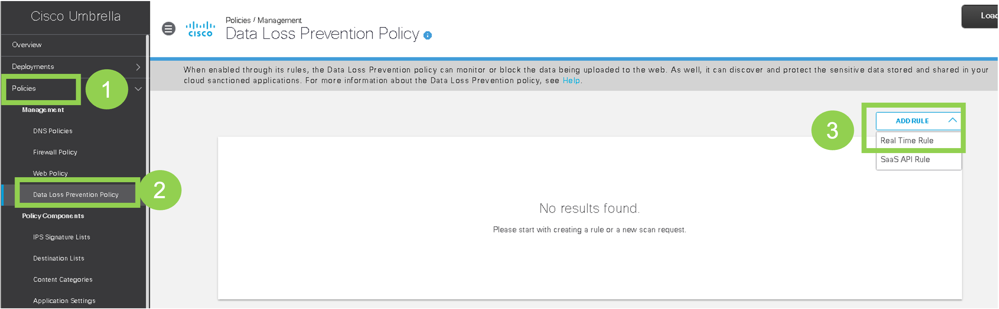
- On the
Add New Real Time Ruleweb page, configure the below settings and as shown in below screenshotsRule Name:DLP GDPR- From the
Severitydropdown menu selectMedium - In
Data Classificationssection, selectBuilt-in GDPR classification. Note you can clickPreviewto view the Data Identifiers - In the
Identities, selectTunnelsto use the traffic from all SD-WAN sites - In the
Destinationsection, click onAll Destinations - Within
Actionsection, selectMonitorfrom the dropdown menu - Click
Saveat the bottom right
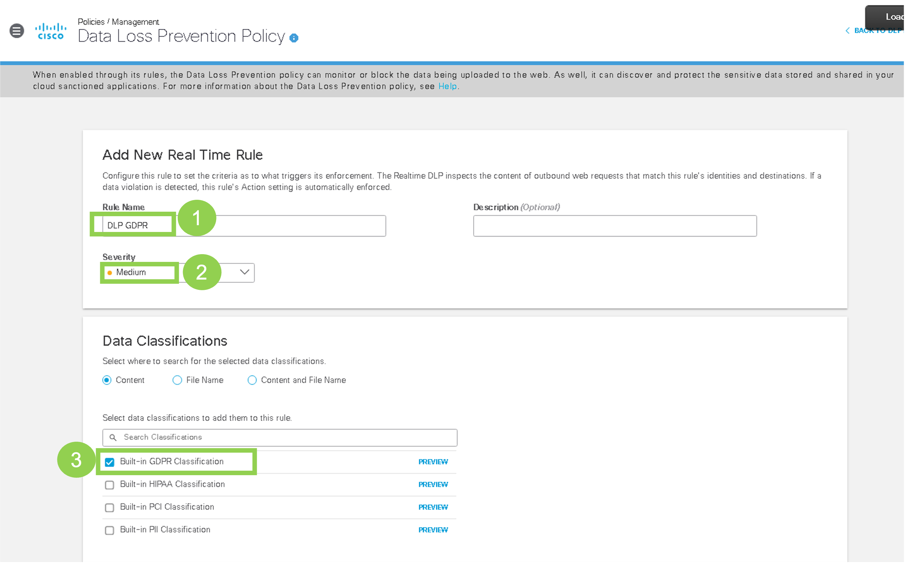 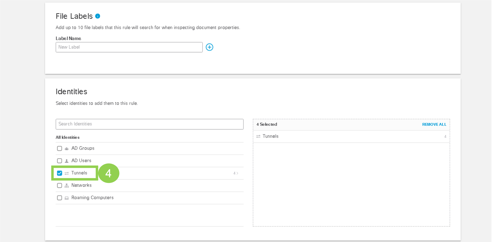 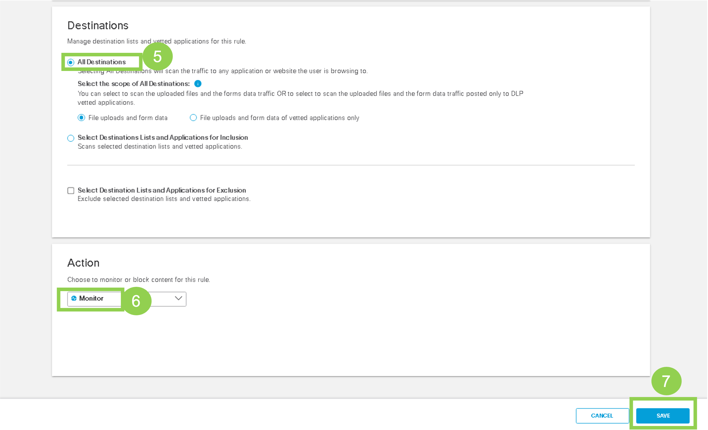
Now the DLP policy to inspect (Monitor) the compliance of GDPR data has been configured.
Step 2 - Sample file for DLP
In this step a sample file to test the previously configured DLP policy will be downloaded on a VM with hostname of Site300-Ubuntu-VPN10 on SD-WAN site-300. This file has sample data that includes items such as Name, Birth date, Gender, address etc. If this file is published to cloud, then this data in file will result in raising a compliance alarm on Umbrella, as per our policy.
-
Launch console access to ubuntu Site300-Ubuntu-VPN10 host by using mRemoteNG application. Login with credentials of
viptela. -
Use Chromium Browser on this VM to navigate onto website with URL of
dlptest.com/sample-data. -
Scroll (down) to
Sample SSN and CCN Fileson this website and then click to downloadCSV Fileas shown in below figure. This file will be automically saved on theDownloadsfolder on the VM.
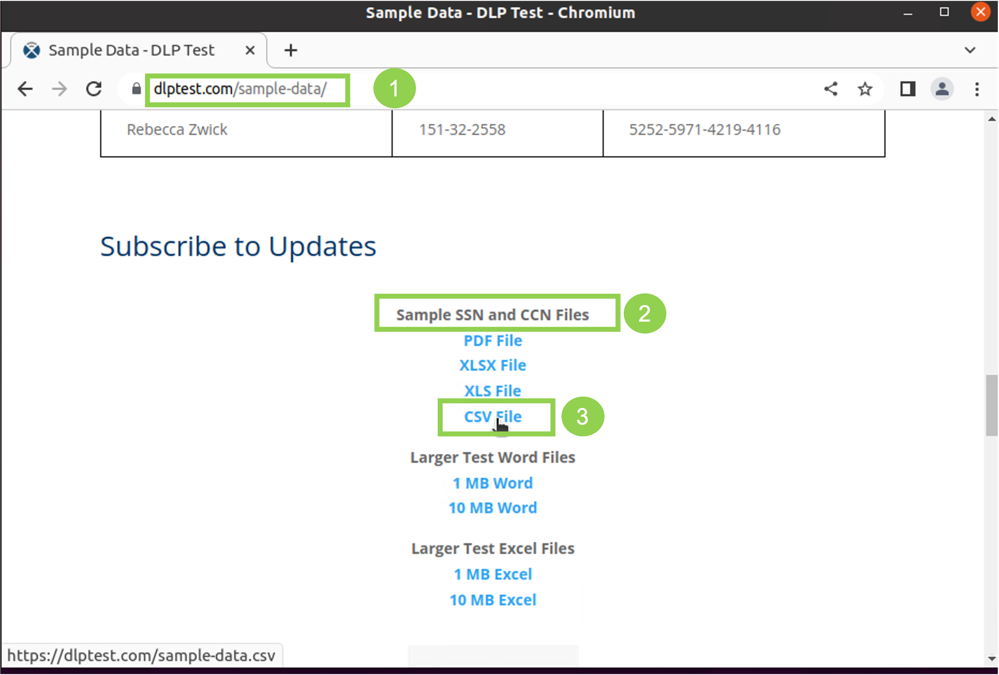
Now we have the sample file available on our host VM to test it.
Step 3 - Validate DLP Monitor Policy
Now validate this DLP policy by publishing this file. Umbrella will detect the GDPR compliance data violation as per our policy and raise an event in it's reporting.
-
Launch console access to ubuntu Site300-Ubuntu-VPN10 host by using mRemoteNG application. Login with credentials of
viptela -
Use Chromium Browser to navigate to website:
dlptest.com/http-post/ -
On this web page, on Chromium Browser, navigate to
File Upload *section. Click onDrop a file here or click to uploadas shown in below screenshot:
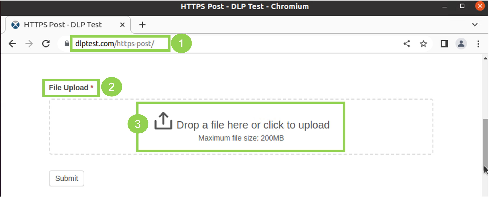
- On the
Open Filespage, click onDownloads, then click onsample-data.csvand clickOpento upload the file:
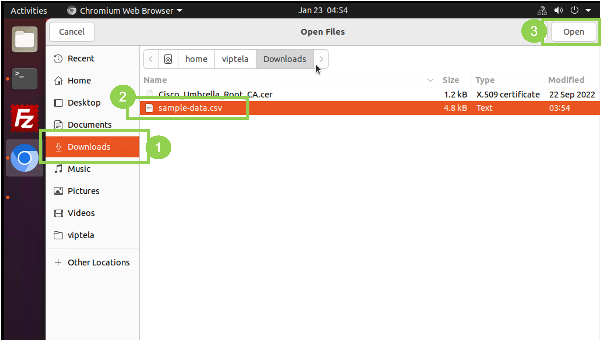
- The file will be uploaded successfully. You will see the message as shown in below screenshot
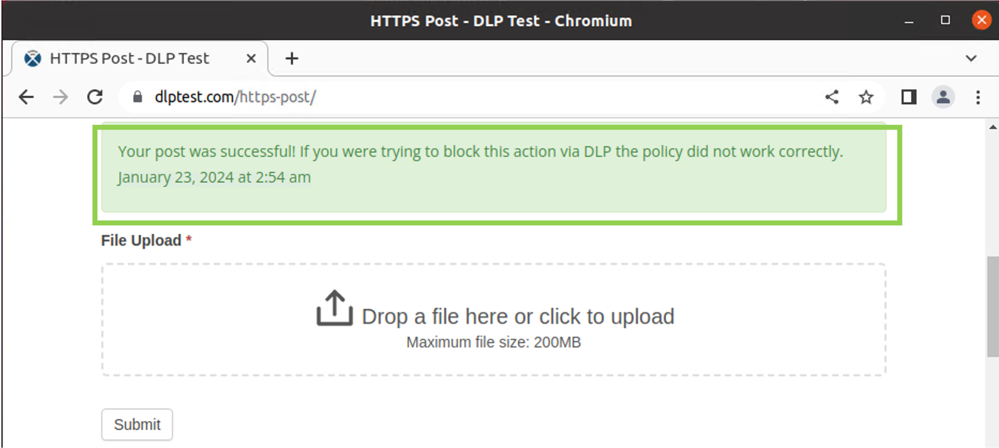
Now let's navigate to Umbrella to check if a compliance alarm was raised as per our policy.
-
On the RDP session (jumphost), logon to Umbrella Dashboard by clicking on Google Chrome Browser bookmark named
Umbrella SSO. It will open the Umbrella dashboard and auto-login using single-sign-on. -
Navigate to Reporting > Additional Reports > Data Loss Prevention. On the right pane, you should see an
Event TypeofReal TimewithSeverityofMediumand other details related to the File upload toDLP Testwebsite. -
Further on the right side of each row, click on the three dots (
...) and then clickView Full Detailsto check the various GDPR related violations detected by Umbrella. Below is a sample screenshot for such event, your view may be little different.
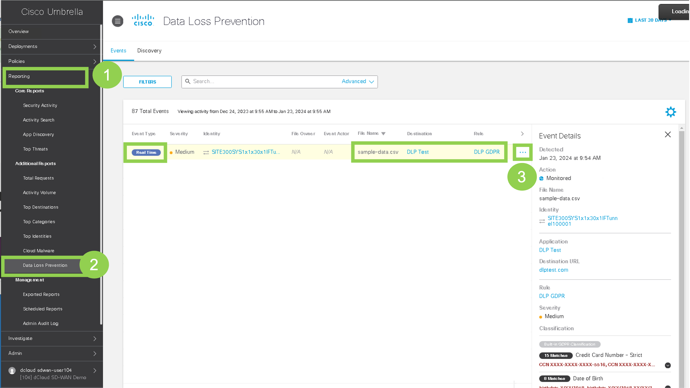
This event confirms that Umbrella has detected the compliance violation.
Step 4 - Umbrella DLP Block Policy
Now let's modify the existing DLP policy to Block (instead of Monitor) the content in case of breach of GDPR compliance
-
On the RDP session (jumphost), logon to Umbrella Dashboard by clicking on Google Chrome Browser bookmark named
Umbrella SSO. It will open the Umbrella dashboard and auto-login using single-sign-on. -
Navigate to Policies > Management > Data Loss Prevention Policy. One DLP Rule should appear on the right pane. Click on the three dots (...) on the right side as shown in below screenshot and then click Edit Rule:
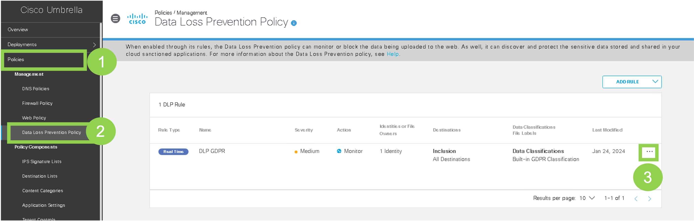
- On the
Edit Real Time Rulescroll down to theActionsection and select the action ofBlockfrom the dropdown menu and clickSave:
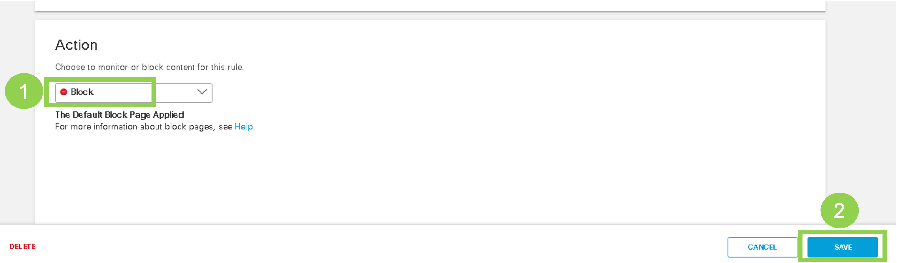
Now this rule has been edited with block action instead of just monitor.
Step 5 - Validate DLP Block Policy
Now validate this DLP policy by publishing the test file previously downloaded on VM/host on Site300. Umbrella will detect the GDPR compliance data violation as per our policy and block uploading of this file.
-
Launch console access to ubuntu Site300-Ubuntu-VPN10 host by using mRemoteNG application. Login with credentials of
viptela -
Use Chromium Browser to navigate to website:
dlptest.com/http-post/. If you already have this webiste open on Chromium Browser, you must refresh the browser to navigate on to this page again. -
On this web page, on Chromium Browser, navigate to
File Upload *section. Click onDrop a file here or click to uploadas done in previous step in this task. -
On the
Open Filespage, click onDownloads, then click onsample-data.csvand clickOpento upload the file -
The file upload will fail. You will see the message as shown in below screenshot
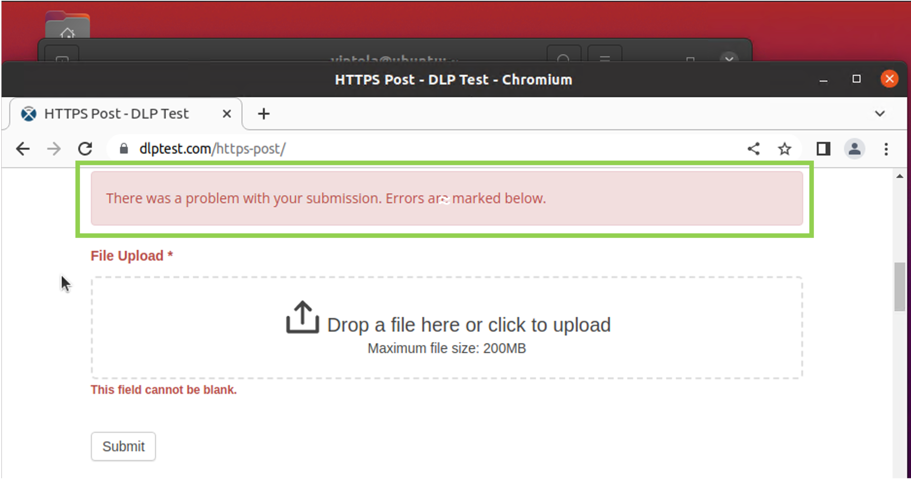
Now let's navigate to Umbrella to check if a compliance event was raised as per our policy.
-
On the RDP session (jumphost), logon to Umbrella Dashboard by clicking on Google Chrome Browser bookmark named
Umbrella SSO. It will open the Umbrella dashboard and auto-login using single-sign-on. -
Navigate to Reporting > Additional Reports > Data Loss Prevention. On the right pane, you should see an
Event TypeofReal TimewithSeverityofMediumand other details related to the File upload toDLP Testwebsite. This event should have an action ofBlocked -
Further on the right side of each row, click on the three dots (
...) and then clickView Full Detailsto check the various GDPR related violations detected by Umbrella. Below is a sample screenshot for such block event, your view may be little different.
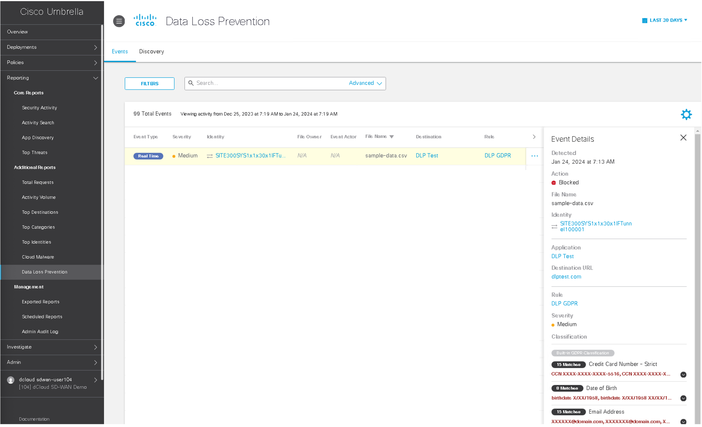
This event confirms that Umbrella has detected the compliance violation and resulted in Blocking the upload of this file.